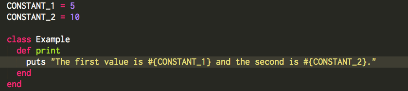
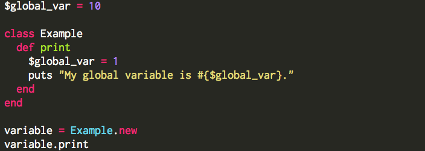
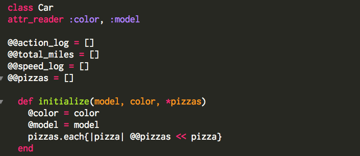
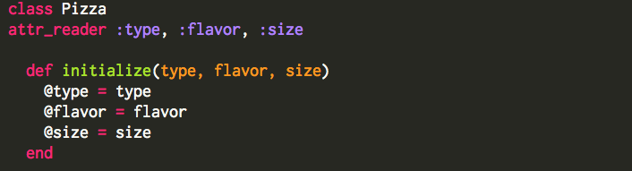
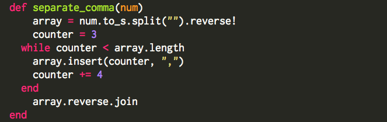

Results May Vary
Week 6
Variable Scoping and the Five Types of Variables
October 24, 2014
Ruby variables are one of the most basic building blocks in code, a place to store data and access it later. Variables can store any object, for example an array, integer, string, and so on. But to make variables even more versatile, variable scoping allows variables to be accessible in specific situations. This helps protect data by making it accessible at certain levels in your program but not others.
Ruby has a number of different types of variables which each have a different scope:
Constants
Constants are variables intended to be set only once and are accessible from anywhere within the place they were set. If they are set outside an object, they are accessible globally throughout a program, like in the example below. If they are set within a class or method, they are accessible only within that class or method. Although it is possible to change Constants, a warning message comes up verifying your intent. Constants are specified by writing the variable name in all caps.

Global Variables
Global variables are accessible from anywhere within the program, regardless of where they are declared. They are denoted with a dollar sign (“$”) in front of the variable name. Unlike constants, global variables can be changed easily without a warning message. Global variables are used sparingly because they can be read and written from anywhere in the program, which makes tracking bugs difficult. In the following example, the “.print” method would print the global variable as “1”, since even though it was declared outside the class, it was changed within a method:

Class Variables
Class variables are shared among all instances of a particular class. This means that if an object changes the class variable, it will be changed for all instances of the class variable later on. Class variables are denoted with two “at signs” (“@@”) before the variable name and are initialized when the class is created. A useful example for class variables is to create an array that your class methods would append and update each time, like so:

Instance Variables
Some of the most commonly used variables are instance variables. Denoted with one “at sign” (“@”), instance variables are local to specific instances of an object. They let you use the same variable across all the methods within your class. For example you might have the object of a class called “Pizza,” and set an instance variable called “@flavor” which would allow you to access (but not change) the flavor in any method within the Pizza class:

Local Variables
Lastly, local variables the most basic type of variable and have no designation or symbol before their name. Local variables are only accessible where they are declared. For example, a local variable declared within a method is only accessible within that method. In the following case, “array” and “counter” are local variables, and they are only accessible within the “separate_comma” method:

The five types of variables give you a good way to store or access data for any situation within a program. In some cases, you may want to make your variable easy to use and reset anywhere. In other cases, you would want to keep your variable constant throughout the program. Variable scoping lets you do that, ultimately allowing you to do more with your program.